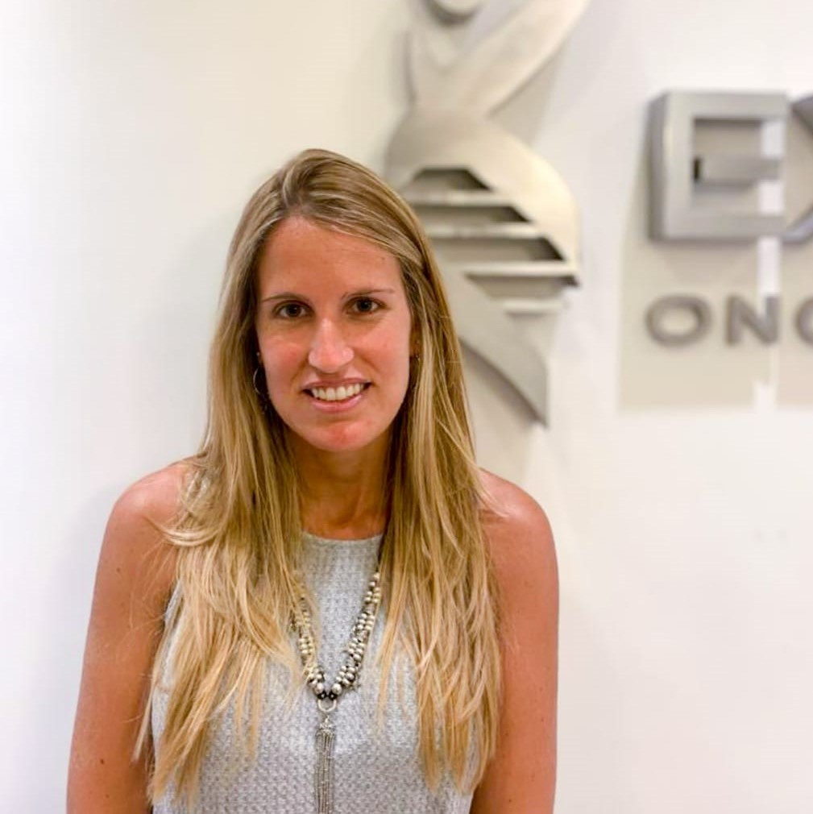

0381 426-9113
Lun, Mar y Jue: 8hs a 20hs - Mie y Vie: 8hs a 13hs

No pierdas tu pelo durante la Quimioterapia
Sistema del enfriamiento capilarEl uso de enfriamiento del cuero cabelludo o "gorros fríos" ha demostrado ser una forma efectiva de minimizar la pérdida de cabello inducida por la quimioterapia y puede dar como resultado un alto nivel de retención o preservar por completo el cabello.
Áreas médicas

Oncología
EXELSUS es un Centro Médico en el que se brinda un tratamiento integral al paciente Oncológico.

Psico-Oncología
Tratamos de acompañar al paciente no solo desde el tratamiento médico sino desde el psíquico y psicológico.
Nutrición orientada a oncología
Acompañamos al paciente a dar pelea en todos los frentes posibles, y una buena nutrición es clave para vencer al cáncer.
Nuestros Profesionales

Dr. Juan José Zarbá
Director médico y oncólogo clínico
- Profesor adjunto de la cátedra de Oncología en la Facultad de Medicina de la UNT.
- Jefe del Servicio de Oncología del Hospital Centro de Salud Zenón Santillán.
- Ex residente del Dr. Reynaldo Chacon, Buenos Aires.
- Ex residente extranjero del Instituto Gustave Roussy, París, Francia.


Lic. Silvia Rivera
Psico-Oncología - Licenciada en Psicología
- Lic. en psicología - Universidad del Norte de Santo Tomás de Aquino, Tucuman 2007-2012
- Curso de especialización en Psico-Oncología - Centro Integral de Psicooncología, Tucuman, 2013-2015
- Curso: Conceptos básicos en Psicooncología- Instituto Nacional del Cáncer- 2017
- Seminario avanzado de Psicooncología - Instituto Nacional del Cáncer 2018